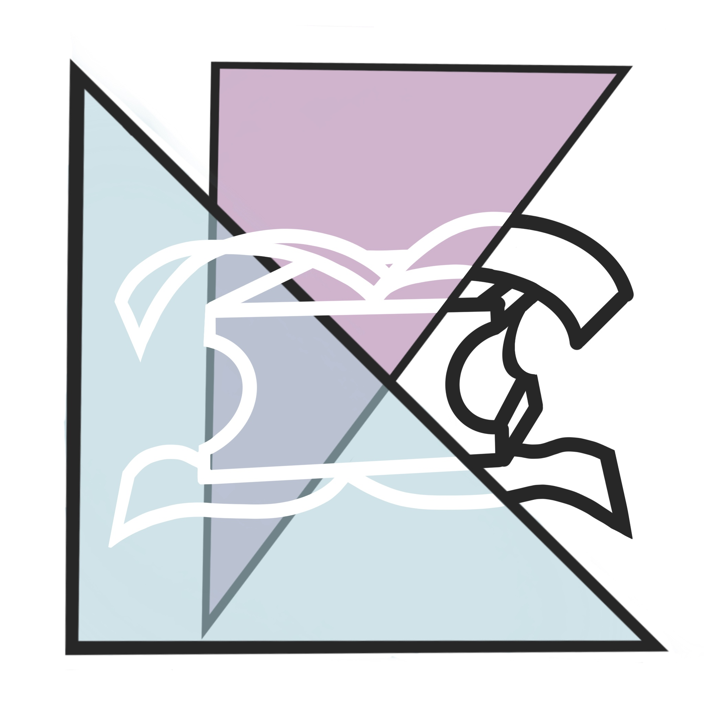

Balance Block
Date - Mar 2019-June 2019
Client - Shirley Ryan Ability Lab
Role - Product Deisgner
Skills - Human-centered design, Prototyping, User Testing
Date - Mar 2019-June 2019
Client - Shirley Ryan Ability Lab
Role - Product Deisgner
Skills - Human-centered design, Prototyping, User Testing
Increasing Independence
This project aimed to assist our user, who had cerebral-palsy, in putting a shirt on independently. While putting on a shirt is a complex movement, after our observations and interviews with our user, their parents, and their physical therapist, we noticed that our user's leg instability is what prevented them from completing this task independently.
Therefore, we developed the Balance Block, an easy-to-use, comfortable stability aid to support our user as they put on a shirt independently.
Balance is Key
When seated, our user's legs would move and prevent him from staying stable when unsupported. They would then use their arms to support themselves, which prevented them from using their arms to put a shirt on. Therefore, we developed a solution that stabilize our user's lower body to assist them in putting on a shirt by themself.
Pool Bouy Inspiration
During our initial user tests, we actually used a pool buoy as a low-fidelity prototype to experiment with different ways of stabilizing our user's legs.
Not only did we get the best results in terms of increasing lower body stability, we also got feedback from our client that this mockup was their favorite because it was "very cuddly."
Pool Buoy Inspiration
During our initial user tests, we actually used a pool buoy as a low-fidelity prototype to experiment with different ways of stabilizing our user’s legs. Not only did we get the best results in terms of increasing lower body stability, we also got feedback from our client that this mockup was their favorite because it was “very cuddly.”
Sketches & Drawings
Attaching the Block
After developing the shape of the block, our next phase of prototyping surrounded how to hold the block in place. As this product would be used in a variety of environments, we decided we needed to stabilize the block to the user as opposed to another object (like a chair or their wheelchair) which may or may not be present at the time of use. Therefore, we prototyped a number of attachment methods that would (1) hold the block in place and (2) be easy for the user to operate independently.
Preventing Slipping
Having decided on a strap configuration, we still had an issue with the block slipping. Due to the shape of the block, any pressure from the user's legs would push the block forward until it was out of position. The foam material offered some friction, but not enough to prevent this slipping. Therefore, we decided to prevent slipping by increasing the friction between the user's legs and the block with Plasti-Dip. This solution provided a tackier contact point where the user's legs touched the block, increasing the friction and decreasing any slipping.